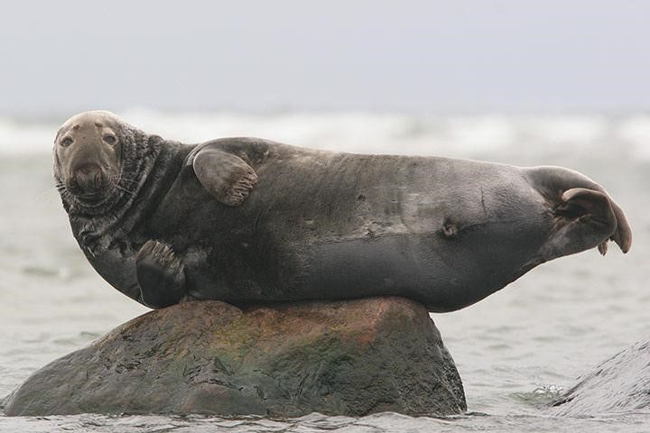

Worden grijze zeehonden bedreigd?
De grijze zeehond staat op de Rode Lijst van beschermde zoogdiersoorten van de IUCN. Daarnaast zijn er speciale reservaten voor grijze zeehonden. Twee eilanden van de Orkney-archipel in het noorden van de Noordzee (Faray en Holm of Faray), zijn in 2006 aangewezen als speciale beschermingszone (Europese Habitat-richtlijn). Op deze eilanden komen grote kolonies grijze zeehonden voor die veel jongen grootbrengen.
Op 1 augustus 1999 heeft de Scottish Wildlife Trust het onbewoonde eiland Linga Holm aangekocht. Op dit eiland, met een oppervlakte van 56 hectare, huist een grote kolonie grijze zeehonden. De organisatie wil graag dat dit eiland ook officieel beschermd wordt.